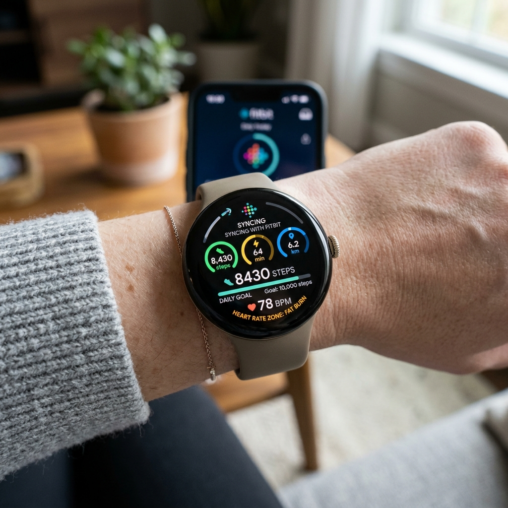

Since Google acquired Fitbit, it has completely overhauled its wearable health strategy. Rather than maintaining Google Fit as its primary fitness platform, Google chose to integrate Fitbit's highly polished, time-tested algorithms directly into the Pixel Watch ecosystem. Out of the box, the Google Pixel Watch acts as a high-end Fitbit tracker, monitoring steps, sleep, heart rate variability, and active workouts.
However, running a deep health platform on a smartwatch can sometimes lead to minor technical hurdles—such as synchronization delays, battery drain, or confusing dashboard interfaces. In this guide, we'll cover essential tips to help you set up Fitbit on your Pixel Watch, fix common sync bugs, and leverage deep metrics like the Daily Readiness Score to optimize your training.

Initial Setup: Linking Your Accounts

To use Fitbit on your Pixel Watch, you must link your device to a **Google Account**. Google has migrated all legacy Fitbit profiles to standard Google Accounts for improved security and unified billing. During your initial setup, make sure you download the Fitbit Companion App on your smartphone and log in using the exact same Google credentials configured on your Pixel Watch. An account mismatch will prevent your wrist metrics from syncing to your phone dashboard.
Troubleshooting Fitbit Sync Failures
If you've noticed that your steps are updating on your wrist but refusing to display in the Fitbit phone app, your sync service has likely stalled. Here is how to fix it:
- Force a Manual Sync: Open the Fitbit app on your phone, place your finger on the dashboard home screen, pull down, and release. You will see a progress line indicating a database sync.
- Exempt Fitbit from Battery Savings: Android's battery optimizer frequently sleeps the Fitbit app in the background, blocking Bluetooth handshakes. Go to your phone's Settings > Apps > Fitbit > Battery and change the setting to Unrestricted.
- Restart Bluetooth Services: Swipe down on both your watch and phone to toggle Bluetooth off for 10 seconds, then toggle it back on. This resets the communication channel.
Quick Fix: Clear App Cache
If the Fitbit app on your Pixel Watch crashes or freezes on a loading circle, go to your watch's Settings > Apps & Notifications > App Info > System Apps > Fitbit. Tap Clear Cache, then restart the watch. This wipes corrupted temporary database segments without deleting your historical workouts.
Understanding Key Fitbit Metrics
Fitbit moves beyond basic step counting to look at your overall physiological stress and readiness:
- Active Zone Minutes (AZM): Unlike steps, which treat all movements equally, AZM measures time spent in specific heart rate zones. You earn one minute for every minute in the fat burn zone, and double minutes for cardio or peak zones. The WHO recommends 150 minutes of moderate activity per week, and AZM tracks this target accurately.
- Daily Readiness Score: By analyzing your sleep score, activity history, and heart rate variability (HRV) baseline over recent days, Fitbit calculates a score from 1 to 100. A high score means you are ready for intense exercise, while a low score indicates your body needs rest or gentle active recovery.
Fitbit Free vs. Fitbit Premium on Pixel Watch
Google packages a free trial of Fitbit Premium with every Pixel Watch, but what happens when it expires? Let's compare the free and paid tiers:
| Feature | Fitbit Free Tier | Fitbit Premium Tier |
|---|---|---|
| Daily Activity & Heart Rate | Yes (live tracking on wrist and phone). | Yes. |
| Basic Sleep Details | Yes (logs sleep duration and stages). | Yes (includes Sleep Profiles and Sleep Score details). |
| Daily Readiness Score | No (basic stats only). | Yes (full score breakdown and recommendations). |
| Historical Health Trends | 7-day history in the app. | Full 30-day and 90-day history charts. |
| Guided Workouts & Mindfulness | Limited selection of basic videos. | Full library of 200+ workouts and calm sessions. |
Optimizing Battery Life During Workouts
Active GPS tracking during outdoor runs can drain a Pixel Watch battery in a few hours. To extend your battery life while tracking hikes or runs:
- Disable AOD During Workouts: Open the exercise settings in the Fitbit watch app and turn off Always-On Display. The screen will turn on only when you lift your wrist to check your stats.
- Keep GPS on "Automatic": Modern Pixel Watches can dynamically shift between on-device GPS and phone GPS. By carrying your phone on your run, the watch can piggyback on your phone's GPS transmitter, reducing watch battery consumption by half.
Fitbit is a incredibly powerful health dashboard when tuned correctly. By optimizing sync settings, using Active Zone Minutes to guide your workouts, and tracking your Daily Readiness, you can transform your Pixel Watch into a personalized health coach.